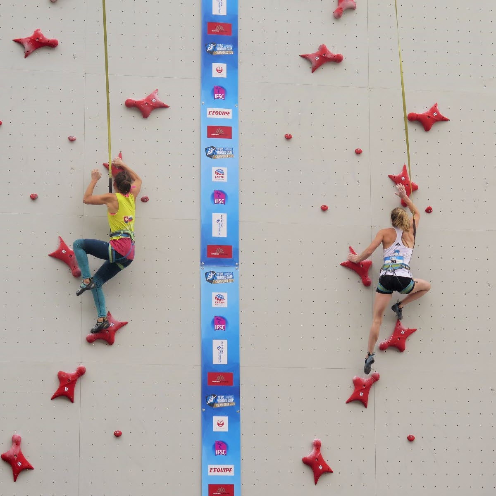

La Vitesse
La Vitesse

Dans cette dicipline le grimpeur doit atteindre le haut du mur le plus rapidement possible.
Il y a deux murs officiels, Un de 10m et un de 15m. en dehors de ce paramètre les murs de vitesses sont tous identique. Ils sont réputés pour être de 6B.
Le record masculin est détenu par l'indonésien Kiromal Katibin, qui a monté le mur en 5,002s en juillet dernier.
Le record feminin est détenu par la polonaise Aleksandra Mirosław, qui a monté le mur en 6,53s en mai dernier.